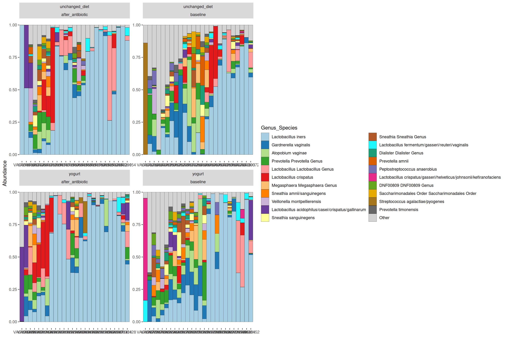
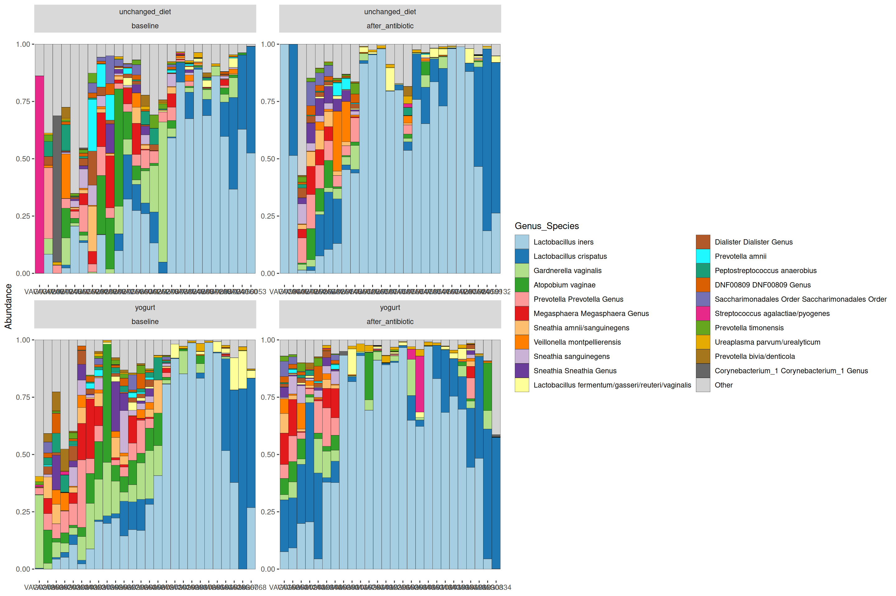

#reading in assays and metadata
amplicon_ids <- read_csv("data/Group A Dataset Yogurt/04_yogurt_amplicon_sample_ids.csv")
samp_id <- read_csv("data/Group A Dataset Yogurt/00_sample_ids_yogurt.csv")
participant_metadata <- read_csv("data/Group A Dataset Yogurt/01_participant_metadata_yogurt.csv")
qpcr <- read_csv("data/Group A Dataset Yogurt/02_qpcr_results_yogurt.csv")
luminex <- read_csv("data/Group A Dataset Yogurt/03_luminex_results_yogurt.csv")Johnathan Yogurt Demo Analysis
Pre-processing
#creating sample data for the phyloseq by merging the csvs, also created log transformed cytokines
yogurt_sample_data <- amplicon_ids %>%
left_join(samp_id %>% select(-arm), by = c("pid","time_point")) %>%
left_join(participant_metadata %>% select(-arm), by = "pid") %>%
mutate(arm_timepoint = str_c(arm, time_point, sep = "_")) %>% #creating a arm and timepoint column for later plotting
left_join(qpcr, by = "sample_id") %>%
left_join(luminex %>%
pivot_wider(names_from = cytokine, values_from = c(conc,limits)), by = "sample_id") %>% #will need to pivot the cyotokine data to longer to merge with sample data
column_to_rownames("amplicon_sample_id") %>%
mutate_at(vars(starts_with("conc_")), list(log10 = ~ log10(. + 1 )))
# select(-matches("conc") | matches("log10")) %>%
#merging metadata with the full reads
#get amplicon sample ids for the yogurt dataset
yogurt_ids <- yogurt_sample_data %>%
as.data.frame() %>%
rownames_to_column("amplicon_sample_id") %>%
pull(amplicon_sample_id)
#filtering the count data by the yogurt ids, then removing unused ASVs - when sum of column is 0
count_table <- readRDS("data/gv_seqtab_nobim.rds") %>%
as.data.frame() %>%
rownames_to_column("amplicon_sample_id") %>%
filter(amplicon_sample_id %in% yogurt_ids) %>%
mutate_at(vars(-amplicon_sample_id), as.numeric) %>%
column_to_rownames("amplicon_sample_id") %>%
select(where(~sum(.) != 0))
#getting all asvs for the yogurt data
asvs <- colnames(count_table)
#filtering the taxa table so there is only asavs for the yogurt data
tax_table <- readRDS("data/gv_spetab_nobim_silva.rds") %>%
as.data.frame() %>%
rownames_to_column("tax_table_asv") %>%
filter(tax_table_asv %in% asvs) %>%
column_to_rownames("tax_table_asv") %>%
as.matrix()
#creating phyloseq object
yogurt_ps <- phyloseq(otu_table(count_table, taxa_are_rows=FALSE),
sample_data(yogurt_sample_data),
tax_table(tax_table))
#saving phyloseq so i dont have to regenerate it every time
saveRDS(yogurt_ps, "yogurt_ps.Rds")Phyloseq cleaning
#after merging the metadata and the count/tax table
yogurt_ps <- readRDS("yogurt_ps.Rds") %>%
tax_fix(unknowns = c("unassigned"), anon_unique = FALSE) %>%
tax_mutate(Genus_Species = str_c(Genus, Species, sep = " "))
yogurt_ps %>%
ps_seriate(dist = "bray", method = "OLO_ward") %>% # these are the defaults
comp_barplot(tax_level = "Genus_Species", facet_by = c("arm","time_point"), sample_order = "bray", n_taxa = 21)
#The taxa names can use some updating
updated_yogurt_ps <- yogurt_ps %>%
# tax_select(tax_list = "Lactobacillus", ranks = "Genus") %>% #filters for Lactos
tax_mutate(Species = case_when(
Species == "Lactobacillus Genus" ~ "crispatus",
Species == "acidophilus/casei/crispatus/gallinarum" ~ "crispatus",
Species == "crispatus/gasseri/helveticus/johnsonii/kefiranofaciens" ~ "crispatus",
Species == "animalis/apodemi/crispatus/murinus" ~ "crispatus",
.default = Species
))%>%
tax_mutate(Genus_Species = str_c(Genus, Species, sep = " "))
updated_yogurt_ps %>%
ps_seriate(dist = "bray", method = "OLO_ward") %>% # arranges samples by microbiome similarity
comp_barplot(tax_level = "Genus_Species", facet_by = c("arm","time_point"), sample_order = "bray", n_taxa = 21)